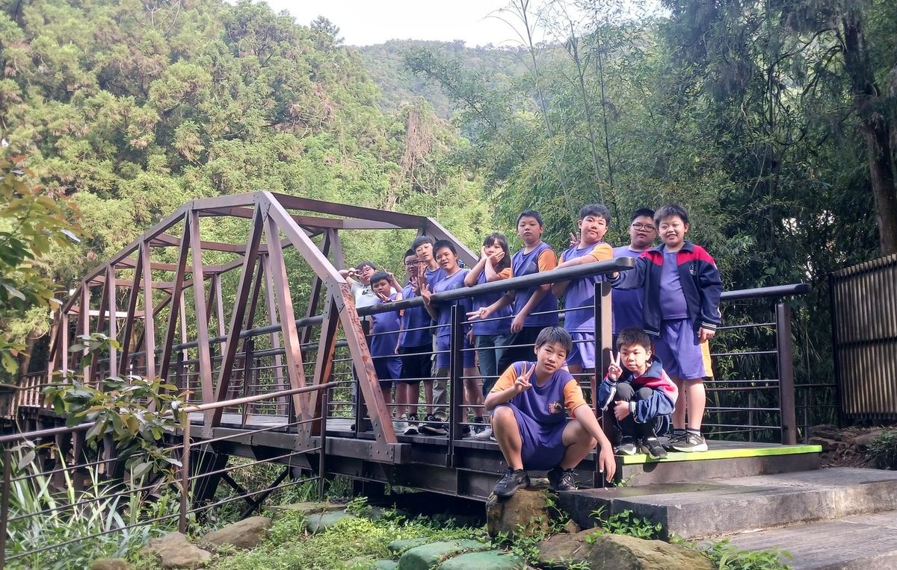
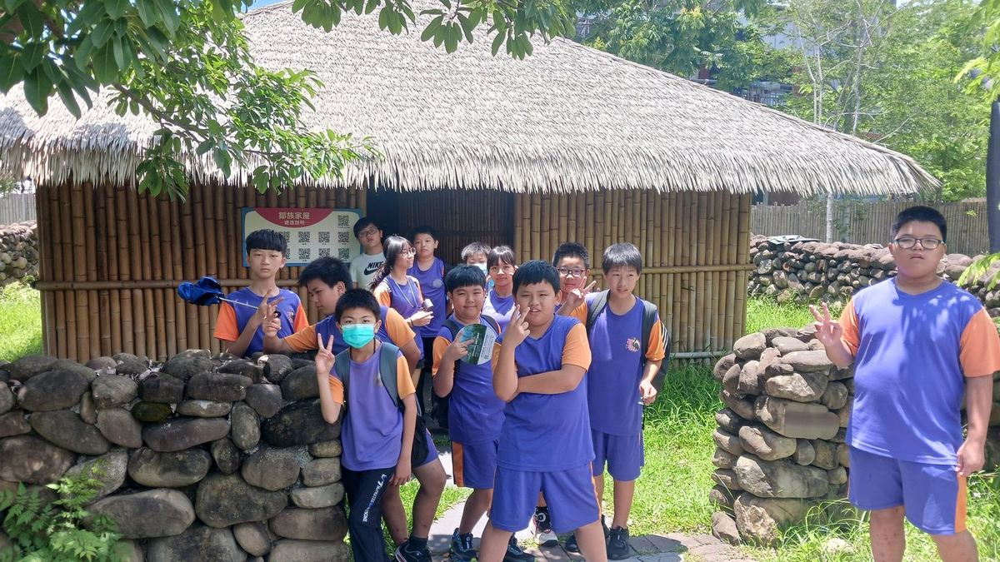
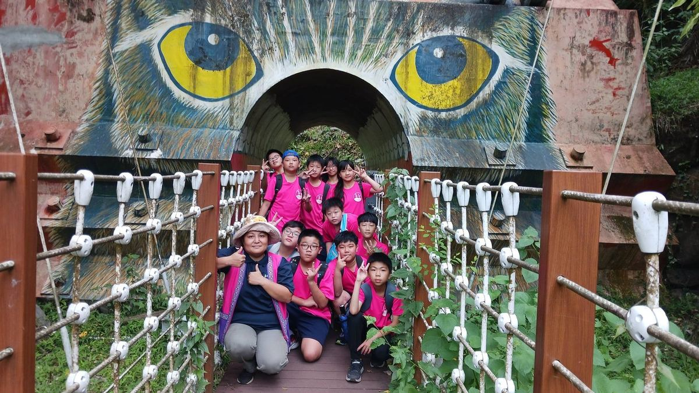
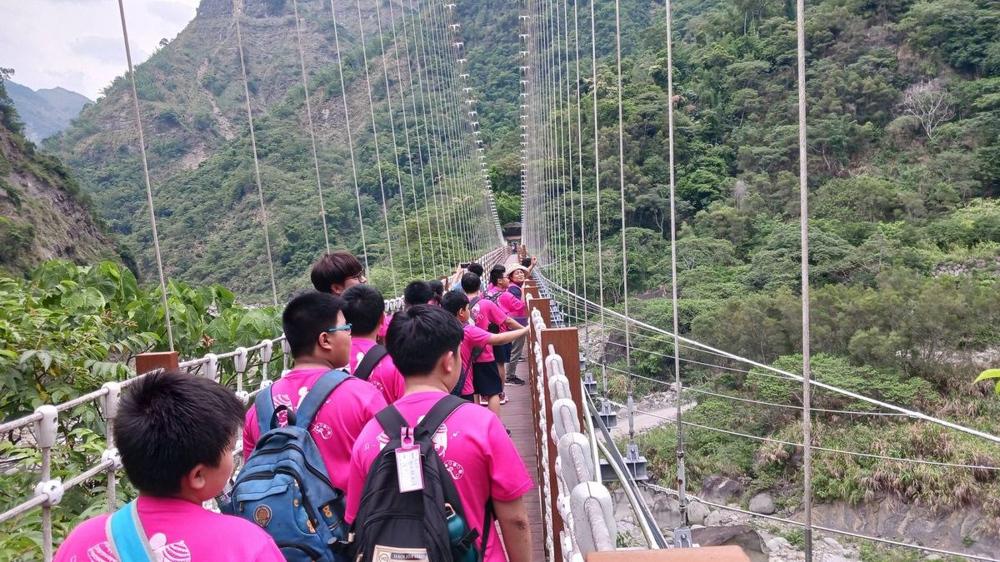
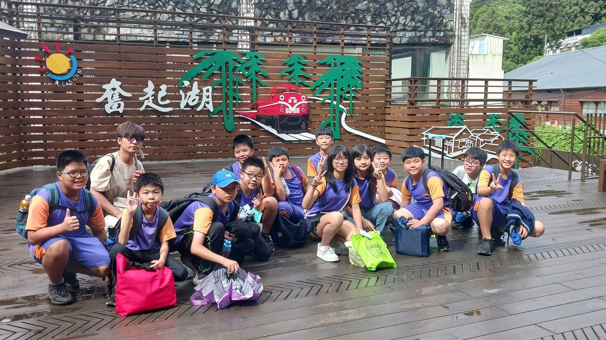

Legend of the Mountains — 6A's Graduation Trip
Day 2 — Fenchihu Old Street & Rail Station, Tsou Luzhu Cultural Park, Niupuzi Love Meadow, Hinoki Village. 奮起湖老街、步道、火車站 vs 鄒族逐鹿文創園區 vs 牛埔仔愛情大草原 vs 檜意森活村。
Sigang's sixth-graders set out on a two-day, one-night graduation trip under the theme "Legend of the Mountains." The itinerary took them through Danayigu Ecological Park and the Tsou cultural park, where they met indigenous traditions, watched signature performances, and joined a guided firefly walk after dark — points of light scattered through the forest, sky and ground in conversation. 本次辦理六年級兩天一夜畢業旅行，主題為「山中傳奇」。活動安排學生參訪達娜伊谷與文創園區，認識鄒族傳統文化，並欣賞特色表演及參與夜間賞螢導覽，體驗山林中螢光點點的自然之美。
They walked the Fenchihu trail and stopped at the historic rail station — a way to read the Alishan Forest Railway as both a daily-life artery and an industrial-heritage timeline. 此外，也參觀奮起湖步道與火車站，了解其豐富的歷史文化，以及阿里山鐵路的重要產業鐵道價值。
On the eve of graduation, the school's wish was simple: that beyond mountain scenery and indigenous life, students would carry home a respect for multiple cultures, an appreciation for historical heritage, and a real care for the natural world. These four threads — 人文・生態・真誠・好學 (humanistic, ecological, sincere, studious) — are the gift Sigang most wants to send graduates into the world with. A "Life is Good" attitude that lasts a lifetime. 畢業前夕，希冀讓學生除了體驗山區自然風光與原住民生活特色之外，更能培養尊重多元文化、珍惜歷史文化資產和愛護自然環境的觀念，這是學校希望能送給畢業生最大的禮物，以學校的願景「人文・生態・真誠・好學」，帶給西港的孩子受用於一生之「人生真好」的能力與態度。
Thank you to the principal, directors, group leaders, and homeroom teachers whose careful planning carried the trip from start to finish. The two days closed in full — and the children, fuller still. 最後感謝校長、主任、組長及導師用心的規劃及陪同，活動圓滿成功，學生收穫滿滿。




